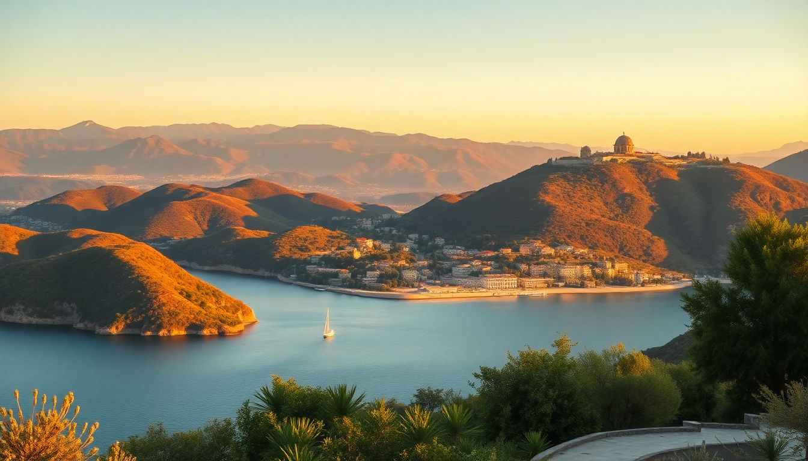

Best Day Trips from Antalya to Olympos, Phaselis & Kemer

I spent a week based in Antalya, and honestly, the city itself is fine for a day or two — but the real payoff is what lies along the coast to the southwest. The highway D400 hugs cliffs over turquoise water, and every exit leads to something worth your time. Here’s what I learned from doing three day trips in four days: Olympos for ruins and a beach, Phaselis for a Roman harbor you can swim in, and Kemer for when you just want a marina with cold beer.
Why base yourself in Antalya for day trips?
Antalya’s central location makes it the best launch point for the Lycian coast. The bus station (Otogar) runs frequent minibuses south, and rental cars are cheap if you want flexibility. I stayed at Puding Hotel in Kaleiçi (the old town), which meant I could walk to the tram for the Otogar in 10 minutes. The Antalya Tram line T2 connects the city center to the bus station directly — use it instead of taxis. You’ll save money and skip traffic.
If you’re driving, the D400 is well-paved but winding. I recommend leaving by 8:00 AM to beat tour buses. The return traffic into Antalya from Kemer can jam up by 4:00 PM — aim to be back by 3:00 PM or stay for dinner.
Is the Olympos day trip worth the drive?
Yes, but with a caveat: Olympos is two things in one spot — an ancient Lycian city overgrown with jungle, and a pebble beach that’s part of the Olympos Beydağları National Park. The entrance fee (around 50 TL at time of writing) gets you both. I walked through crumbling temple walls and sarcophagi half-buried in ivy, then stripped down and jumped into the sea. It’s raw and unpolished — no gift shops, no guides shouting facts.
The downside? The ruins are scattered and not well marked. You’ll need sturdy sandals (I wore Chaco Z1s and was fine). The beach is pebbles, not sand, so bring water shoes. I spent about three hours total: one hour on the ruins, two hours swimming and reading on the beach. If you want manicured ruins, skip this and go to Phaselis instead.
What to do in Olympos:
- Walk the Lycian city path past the Roman aqueduct and temple foundations
- Swim at the beach — water is clear and cold, even in June
- Climb the hill behind the beach for a view of the entire bay
- Skip the “treehouse” backpacker hostels unless you’re under 25 — they’re loud and basic
Should I visit Phaselis or Olympos if I only have one day?
I’d pick Phaselis unless you want the jungle-ruin vibe. Phaselis has three well-preserved Roman harbors, a main street with intact columns, and a beach that’s less crowded than Olympos. I walked the Hadrian’s Gate replica (the original is in Antalya), then swam in the North Harbor where water laps right up to the ancient stone quay. The entrance fee is similar to Olympos, but the site is more compact — you can see everything in two hours.
The beach at Phaselis is sandy in spots, with shallow water that’s good for kids. I saw families with toddlers splashing near the ruins. There’s a basic cafe selling cold drinks and sandwiches, but bring your own water. The parking lot is small — arrive before 10:00 AM on weekends.
Phaselis highlights:
- Main Street with marble columns and mosaic pavements
- South Harbor — best swimming spot, deep enough to dive off the rocks
- Hadrian’s Gate replica (the original is in Antalya’s Kaleiçi)
- Phaselis Museum — tiny but free with your entrance ticket, has amphorae and coins
What is there to actually do in Kemer?
Kemer is the most commercial stop on this list — think marina promenades, souvenir shops, and all-inclusive resorts. I almost skipped it, but I’m glad I didn’t. The Kemer Marina is genuinely pleasant for a sunset walk, and the Moonlight Beach (Belediye Plajı) is free public sand with loungers for rent. I ate lunch at Balıkçı Kemer — a fish restaurant right on the water — and had grilled levrek (sea bass) for 120 TL. It wasn’t cheap, but the view of yachts and mountains made it worth it.
Kemer also has a few non-beach activities: the Kemer Cable Car (Olympos Teleferik) runs up Mount Tahtalı, 2,365 meters high. I didn’t do it — the queue was 45 minutes and the ticket was 250 TL — but friends said the view over the bay is spectacular. If you’re short on time, skip the cable car and stick to the marina and beach.
Kemer essentials:
- Kemer Marina — walk the full loop, it’s 1.5 km
- Moonlight Beach — free entry, loungers 20 TL
- Balıkçı Kemer restaurant — grilled fish and raki
- Olympos Teleferik — cable car up Mount Tahtalı (allow 3 hours round trip)
How do I get between Antalya, Olympos, Phaselis, and Kemer?
Public buses are the cheapest option. From Antalya Otogar, take a Kemer minibus (every 30 minutes, 20 TL, 45 minutes). From Kemer, catch a Çıralı/Olympos minibus (every hour, 15 TL, 30 minutes). Phaselis is on the same road — just tell the driver to drop you at the Phaselis turnoff, then walk 500 meters to the entrance.
I rented a car from Garenta at Antalya Airport for 4 days — cost 800 TL total with insurance. Driving gave me freedom to stop at Çıralı Beach (between Olympos and Phaselis), a quiet sandy strip with sea turtle nests. If you’re driving, the D400 has several pull-offs for photos — pull over at the Göynük Canyon viewpoint for a wide shot of the coast.
Transport options:
- Antalya Otogar to Kemer — minibus, 45 min, 20 TL
- Kemer to Olympos — minibus, 30 min, 15 TL
- Kemer to Phaselis — minibus or dolmuş, 15 min, 10 TL
- Rental car — 200 TL/day from Garenta or Budget at the airport
When is the best time for these day trips?
May, June, September, and early October are ideal. I went in mid-June — air temperature was 30°C, water was 24°C, and crowds were moderate. July and August are brutal: the ruins have no shade, and the beaches pack out by 11:00 AM. I met a couple who went in April and said the water was too cold for swimming (18°C), but the wildflowers on the ruins were incredible.
Winter (November to March) is quiet — many beach cafes close, but the ruins are empty. I wouldn’t recommend it unless you’re specifically avoiding crowds and don’t mind 12°C weather.
Best months for each activity:
- Swimming — June to September (water above 22°C)
- Ruins walking — April, May, October (under 28°C)
- Cable car — any clear day, but mornings are less windy
- Avoid — August weekends (traffic from Antalya to Kemer can take 2 hours)
FAQ
Can I do all three (Olympos, Phaselis, and Kemer) in one day? Technically yes, but you’ll rush. I tried it and regretted it — you spend more time in transit than exploring. Better to pick two: Olympos + Kemer (ruins in the morning, marina in the late afternoon) or Phaselis + Kemer (ruins and beach, then dinner). Driving makes it easier; by bus you’ll lose time waiting at stops.
Are there good restaurants near the ruins? Not really. Olympos has a few basic cafes near the beach entrance selling gözleme and ayran for 30-40 TL. Phaselis has one cafe with soggy sandwiches. I packed a lunch from Pideci Mehmet in Antalya’s Kaleiçi — pide with cheese and spinach, wrapped in foil, stayed fresh for hours. Kemer is the only place with proper sit-down restaurants.
Is the water safe for swimming at Phaselis and Olympos? Yes. Both beaches are part of the national park, and water quality is tested regularly. I swam at Phaselis’ South Harbor and Olympos beach — clear visibility, no jellyfish, no trash. The only issue is pebbles at Olympos — wear water shoes. At Phaselis, the bottom is sandy near the North Harbor, but rocky near the South Harbor.
Conclusion
- Olympos is best for a raw ruin-and-swim combo — bring water shoes and patience for the overgrown paths.
- Phaselis wins for easy access, well-preserved Roman harbors, and a beach that’s less crowded.
- Kemer is worth a half-day for the marina and a seafood lunch — skip the cable car unless you have time to burn.
- Drive if you can — the D400 views are part of the experience, and you’ll hit more spots like Çıralı Beach and Göynük Canyon.
- Go early — leave Antalya by 8:00 AM, and you’ll have each site mostly to yourself until 11:00 AM.